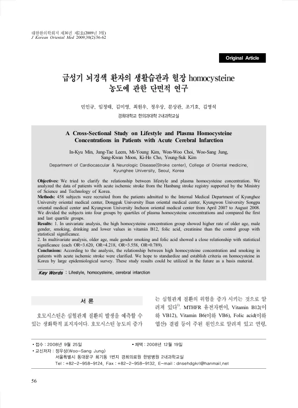

급성기 뇌경색 환자의 생활습관과 혈장 homocysteine 농도에 관한 단면적 연구
Min Ik, Leem Jt, Kim My, Choi Ww, Jung Ws, Moon Sk, Cho Kh, Kim Ys
Journal of Korean Medicine 30(2):56-62

첫 장 · 오픈액세스First page · open access
논문 소개Summary
급성 허혈성 뇌졸중 환자의 생활습관과 혈장 호모시스테인 농도가 어떤 관계인지 살핀 단면 연구입니다. 2007년 4월부터 2008년 8월까지 네 개 한방병원에 입원한 458명을 호모시스테인 농도의 사분위로 나누어 최상위군과 최하위군을 견주었습니다. 단변량 분석에서 농도가 높은 군은 높은 연령과 남성, 흡연, 음주의 비율이 높았고 비타민 B12와 엽산, 크레아티닌 값은 낮았습니다. 다변량 분석에서는 높은 연령과 남성, 흡연, 엽산이 유의한 관련을 보였습니다. 저자들은 흡연과 높은 호모시스테인 농도의 관련이 확인되었다고 정리하면서, 국내 기준치를 세우려면 대규모 역학조사가 필요하다고 적었습니다.
A cross-sectional study of the relationship between lifestyle and plasma homocysteine concentration in patients with acute ischaemic stroke. Four hundred and fifty-eight patients admitted to four Korean medicine hospitals between April 2007 and August 2008 were divided into quartiles by homocysteine concentration, and the highest and lowest quartiles compared. In univariate analysis, the high-concentration group showed higher rates of older age, male sex, smoking and drinking, with lower values of vitamin B12, folic acid and creatinine. In multivariate analysis, older age, male sex, smoking and folic acid showed significant associations. The authors summarise the finding as a clarified relationship between smoking and high homocysteine concentration, and note that establishing domestic reference values would require large-scale epidemiological survey.
인용Cite
Min Ik, Leem Jt, Kim My, Choi Ww, Jung Ws, Moon Sk, Cho Kh, Kim Ys. 급성기 뇌경색 환자의 생활습관과 혈장 homocysteine 농도에 관한 단면적 연구. Journal of Korean Medicine. 2009;30(2):56-62.